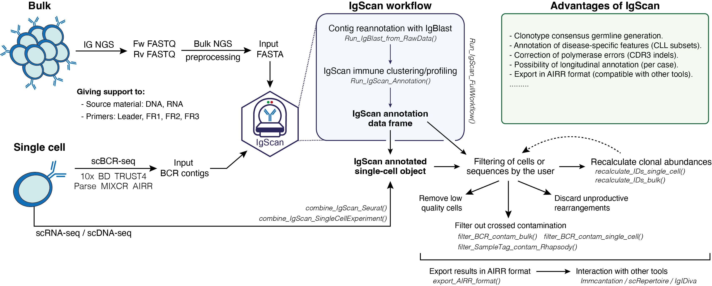

The analysis of the immune repertoire has become one of the cornerstones in basic and clinical research in B-cell neoplasms over the past few years. Understanding the diversity and clonality of B-cell receptors is critical for unraveling disease mechanisms, tracking minimal residual disease, and guiding therapeutic strategies. In this context, the emergence of next-generation sequencing technologies, both at bulk and single-cell levels, has revolutionized our ability to characterize B-cell receptor repertoires with unprecedented depth and resolution, as well as to integrate BCR profiling with multiple omic layers.
Although several tools have been developed to analyze immune repertoire data, many are either optimized for T-cell receptors, lack flexibility for custom analyses, or are not tailored to the specific features of B-cell neoplasms. This limits their applicability in studies where disease-specific patterns, such as somatic hypermutation or clonal evolution, play a central role.
IgScan is designed to fill this gap by providing a streamlined, customizable, and reproducible framework focused on the immune profiling of B-cell malignancies. It is compatible with both bulk and single-cell sequencing data, and supports a wide range of common input formats, including 10x Genomics, MiXCR, TRUST4, Parse Evercode, BD Rhapsody, and AIRR, among others.
Although originally designed with a focus on B-cell malignancies, IgScan is also well suited for broader BCR repertoire analyses, such as studying BCR diversity in healthy individuals. Additionally, it can be seamlessly integrated with other tools for somatic hypermutation analysis and BCR phylogenetic reconstruction (Dowser), enabling comprehensive immune repertoire studies across a wide range of biological contexts.

The IgScan website provides extensive documentation and step-by-step tutorials for all core functions.
The current version of IgScan can be downloaded from this GitHub repository by:
install.packages("devtools")
library(devtools)
devtools::install_github("https://github.com/nadeulab/IgScan/tree/main",
build_vignettes = T, dependencies = T)Example datasets for testing IgScan can be accessed by the users once the package has been built/installed. Our example datasets consists of:
fasta_ngs_1 <- system.file("extdata/igscan_test_bulkNGS_sample1.fasta", package = "IgScan", mustWork = T)
fasta_ngs_2 <- system.file("extdata/igscan_test_bulkNGS_sample2.fasta", package = "IgScan", mustWork = T)
fasta_sc_1 <- system.file("extdata/igscan_test_10xBCR_sample1.fasta", package = "IgScan", mustWork = T)
seurat_1 <- system.file("extdata/igscan_test_10xSeurat_sample1.rds", package = "IgScan", mustWork = T)
fasta_sc_2 <- system.file("extdata/igscan_test_10xBCR_sample2.fasta", package = "IgScan", mustWork = T)
seurat_2 <- system.file("extdata/igscan_test_10xSeurat_sample2.rds", package = "IgScan", mustWork = T)To suggest improvements, modifications or request additional functionalities for IgScan, please, submit them as GitHub issues.
If running into any bugs or issues also submit a GitHub issue with some details of the problem. Submitting a reproducible example would be of help.
We are also open for pull requests for fixing bugs or add new features.
If you use this package in published work, please cite the GitHub repository for now:
https://github.com/nadeulab/IgScan
A manuscript describing the method is currently in preparation and citation details will be updated once available.